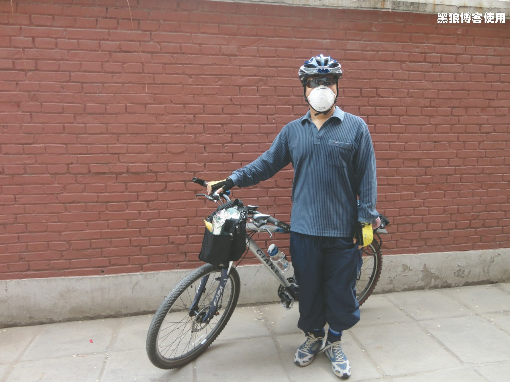
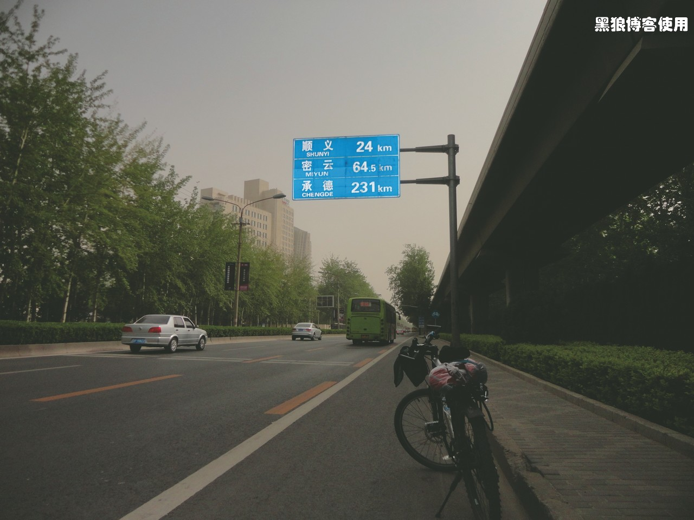
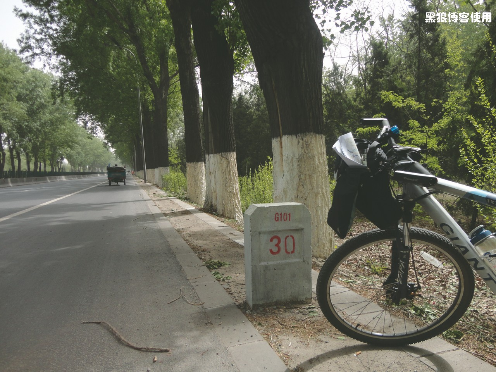
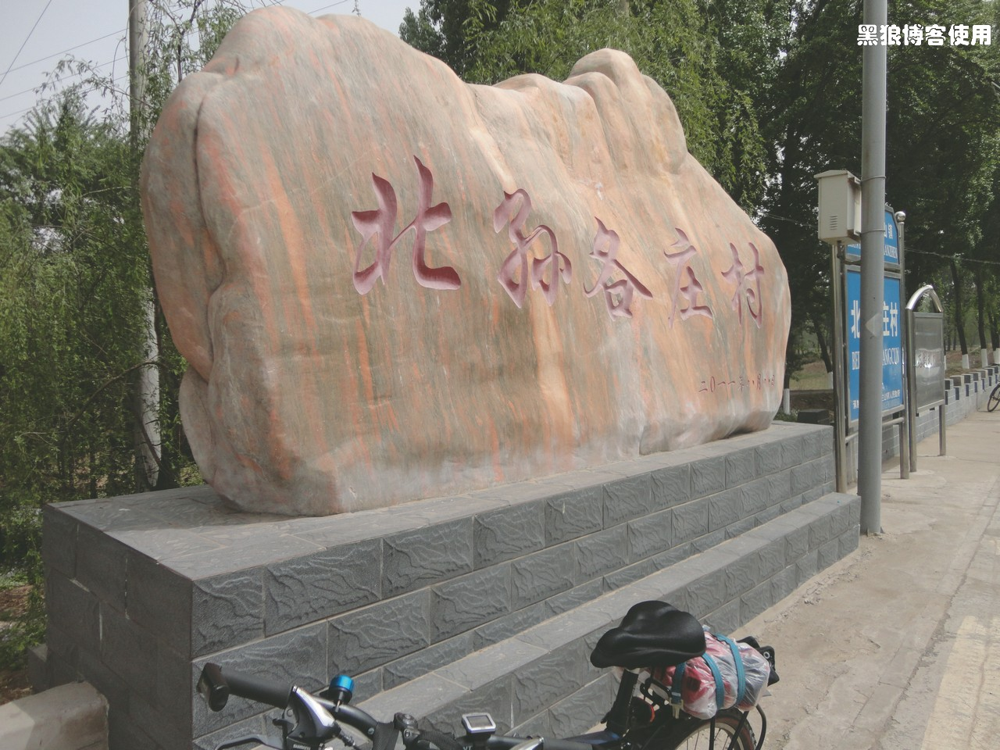
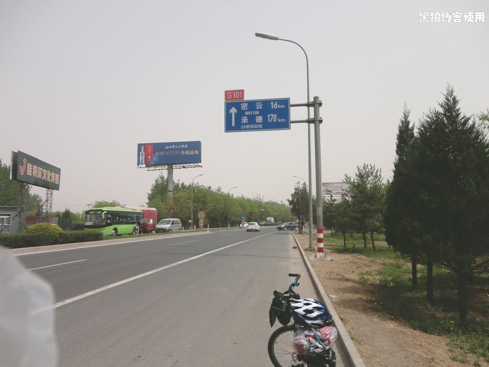

放假前一天，和大风较劲，搞得我腿很疼，为了避免影响五一出行，28 号特意坐了一天地铁。不过还是没有缓过劲来，疼，依然的疼，不管那么多了。
准备了半天，还是不够充分，忘了带我的录音笔，以至于我的好多感触，想了就忘了，最后只剩下疼痛的感觉了，还是直接看照片吧。
7:30，我收拾完毕，让胡有理给咱留个影，准备出发，其他人（8 人）要 9点钟才出发。

出发时的英姿
一个小时后，激动和兴奋的心情还是没有降低，尽管腿已经开始酸痛。恍惚间，绕错了路，居然跑到了东直门，往南去了，幸好及时发现。
飞奔在京顺路上，看着路标，感觉不是很远，还剩 64KM。

到了天竺附近的一个桥上，以前开车路过时一直觉得这个桥挺大的，这次感觉它很渺小。路上车堵得很厉害，不过，咱却是一路畅通。
这次来了个 10 分钟休息，大休，休息后腿更加的酸疼，需要骑行几分钟后才能让疼痛的感觉慢慢减弱。
到了枯柳树环岛，又一直骑下去了，1 分钟后，感觉不对，居然又错了，赶紧折回，重新选路口。
G101 国道 30 公里处， 这次的健康出行，也让小草们受益一下，来点肥料。忽然想起我的苹果
mp3 怎么忘了听，咱一直没有听的习惯，这次特意带上，时尚一把。谁知昨天充了一夜的电，居然到用的时候一点电都没有，怎么感觉它只能用电脑才可以充上电。气死我了，苹果这么烂的产品居然还有一堆人在用，包括 iPod、iPhone， 连个 USB 口都没有， 复制个东西都不行，一群傻二们还拿着炫耀，这帮家伙，太二！（胡有理同志估计看到这个肯定无比地生气与不忿）
把气愤转化为动力，接着走！
到了这，天已经有点暴晒的感觉了。附近有好多卖小狗的，看着挺可爱的。
还有16 公里了，电话响了，接！胡有理的电话， 居然她们堵车还没有上京承高速。她还说我老丈人也骑单车去密云了，挺意外的，不知走到哪了。
很巧，妹夫来电话，说老丈人已经到了密云，我大喊：“不可能，我还有 16 公里，他怎么可能比我还快？”
不管那么多了，又大休，把各种吃的拿出来大吃。给老丈人打了个电话，才知道他居然 5 点钟就出发了，呵呵 ~~，我说怎么比我还快。看了看路线图，发现走的不是我计划的那条线，只顾着看马路边路标了，一路沿着 G101 线就下来了。
开车坐车的都到了密云的招商大厦，并且开始大吃特吃起来，等我辛苦感到的时候，我已经骑行了 85 公里，时间是下午 1:30。餐桌上的菜基本都是底了，幸好路上又吃又喝的，现在还不饿。
中午一起吃饭，我到的时候盘子基本都是底了。照了些照片，都是合影。
饭后，其他人都开车坐车走了，只剩我一个骑着单车去密云县内转转。忽然想起忘了问他们准备去哪了，算了，反正咱的自行车灵活，密云也不大，逛一会儿再说吧。
下午 5 点，我正在公园的长凳上揉腿、晒脚，接到电话，说到石城镇住宿。穿上鞋，推车出发，路上问了个老大爷，说大概 20 公里的路吧。
谁成想，这 20 公里，有好多的上坡与下坡，让我的大腿承受了多次的剧痛，路上我大叫不止。
黑狼语录：
- 饱满的热情，与大无畏的精神，让我坚持到了最后。
- 现在回想起来，我还觉得自己很坚强。哈哈。